18. Fixation and uptake of nitrogen¶
18.1. Introduction¶
The Fixation and Uptake of Nitrogen model is based on work by Fisher (J.) et al., (2008), Brzostek et al. (2015) and Shi et al. (2016). The concept of FUN is that in most cases, Nitrogen uptake requires the expenditure of energy in the form of carbon, and further, that there are numerous potential sources of Nitrogen in the environment which a plant may exchange for carbon. The ratio of carbon expended to Nitrogen acquired is referred to here as the cost, or exchange rate, of N acquisition (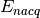, gC/gN)). There are four pathways for N uptake:
- Fixation by symbiotic bacteria in root nodules (for N fixing plants) (
 )
) - Retranslocation of N from senescing tissues ()
- Active uptake of Nitrogen by plant roots as nitrate (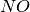3) ()
- Active uptake of Nitrogen by plant roots as ammonia (
 4) (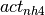)
4) (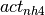)
The notation suffix for each pathway is given in parentheses here. At each timestep, each of these pathways is associated with a cost term (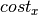), a payment in carbon (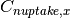), and an influx of Nitrogen (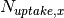), any of which may be zero, and where  is one of the four uptake streams listed above (, , or ).
is one of the four uptake streams listed above (, , or ).
18.2. Boundary conditions of FUN¶
18.2.1. Available Carbon¶
The carbon available for FUN, 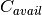 (gC m-2) is the total canopy photosynthetic uptake (GPP), minus the maintenance respiration fluxes (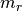) and multiplied by the time step in seconds (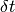). Thus, the remainder of this chapter considers fluxes per timestep, and integrates these fluxes as they are calculated.
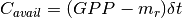
Growth respiration is thus only calculated on the part of the carbon uptake that remains after expenditure of C by the FUN module.
18.2.2. Available Soil Nitrogen¶
18.2.3. Cost of Nitrogen Fixation¶
18.2.4. Cost of Active Uptake¶
18.3. Resolving N cost across simultaneous uptake streams¶
The total cost of N uptake is calculated based on the assumption that carbon is partitioned to each stream in proportion to the inverse of the cost of uptake. So, more expensive pathways receive less carbon. Earlier versions of FUN (Fisher et al. 2008) utilized a scheme whereby plants only took up N from the cheapest pathway. Brzostek et al. introduced a scheme for the simultaneous uptake from different pathways. Here we calcualate a ‘conductance’ to N uptake (analagous to the inverse of the cost function conceptualized as a resistance term) 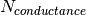 ( gN/gC) as:
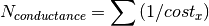
From this, we then calculate the fraction of the carbon allocated to each pathway as
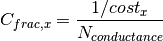
These fractions are used later, to calculate the carbon expended on different uptake pathways. Next, the N acquired from each uptake stream per unit C spent (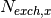, gN/gC) is determined as
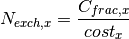
We then determine the total amount of N uptake per unit C spent (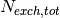, gN/gC) as the sum of all the uptake streams.
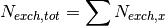
and thus the subsequent overall N cost is
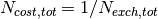
Throughout these calculations, is the sum of the fixation and active uptake pathways. Retranslocation is determined via a different set of mechanisms, once the 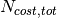 is known.
18.4. Nitrogen Retranslocation¶
The retranslocation uses an iterative algorithm to remove Nitrogen from each piece of falling litter. There are two pathways for this, ‘free’ uptake which removes the labile N pool, and ‘paid-for’ uptake which uses C to extract N from increasingly more recalcitrant pools.
At each timestep, the pool of carbon in falling leaves (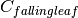, g m-2) is generated from the quantity of litterfall on that day (see Phenology chapter for details). The amount of N in the litter pool (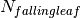, g m-2) is calculated as the total leaf N multiplied by the fraction of the leaf pool passed to litter that timestep.
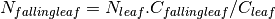
The carbon available at the beginning of the iterative retranslocation calculation is equal to the input into FUN.
C_{avail_retrans,0} = C_{avail}
18.4.1. Free Retranslocation¶
Some part of the leaf Nitrogen pool is removed without the need for an C expenditure. This ‘free’ N uptake amount, (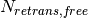, gN m-2) is calculated as
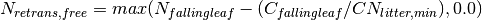
where 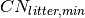 is the minimum C:N ratio of the falling litter (currently set to 1.5 x the target C:N ratio).
The new (gN m-2) is then determined as
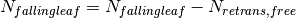
and the new litter C:N ratio as
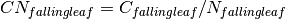
18.4.2. Paid-for Retranslocation¶
The remaining calculations conduct an iterative calculation to determine the degree to which N retranslocation from leaves is paid for as C:N ratios and thus cost increase as N is extracted. The iteration continues until either
- The cost of retranslocation (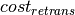 increases beyond the cost of acquiring N from alternative pathways ().
- 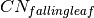 rises to a maximum level, after which no more extraction is possible (representing unavoidable N loss) or
- There is no more carbon left to pay for extraction.
First we calculate the cost of extraction (, gC/gN) for the current leaf C:N ratio as
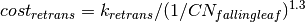
where 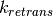 is a parameter controlling the overall cost of resorption, which also increases exponentially as the C:N ratio increases Say something about 1.3 exponent).
- Next, we calculate the amount of C needed to be spent to increase the falling leaf C:N ratio by 1.0 in this iteration
 (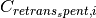, gC m-2) as:
(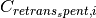, gC m-2) as: 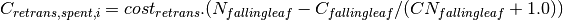
(wherein the retranslocation cost is assumed to not change over the increment of 1.0 in C:N ratio). Next, we calculate whether this is larger than the remaining C available to spend.
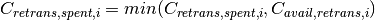
The amount of N retranslocated from the leaf in this iteration (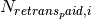, gN m-2) is calculated, checking that it does not fall below zero:
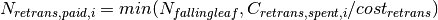
The next step calculates the growth C which is accounted for by this amount of N extraction in this iteration ( ). This is calculated using the current plant C:N ratio, and also for the additional C which will need to be spent on growth respiration to build this amount of new tissue.
). This is calculated using the current plant C:N ratio, and also for the additional C which will need to be spent on growth respiration to build this amount of new tissue.
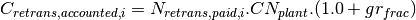
Then the falling leaf N is updated:
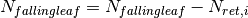
and the and cost_{retrans} are updated. The amount of available carbon that is either unspent on N acquisition nor accounted for by N uptake is updated:
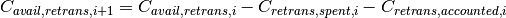
18.4.3. Outputs of Retranslocation algorithm.¶
The final output of the retranslocation calculation are the retranslocated N ( , gN m-2), C spent on retranslocation (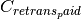, gC m-2), and C accounted for by retranslocation (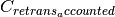, gC m-2).
, gN m-2), C spent on retranslocation (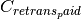, gC m-2), and C accounted for by retranslocation (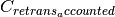, gC m-2).
For paid-for uptake, we accumulate the total carbon spent on retranslocation (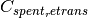),
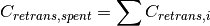
The total N acquired from retranslocation is
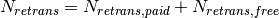
where N acquired by paid-for retranslocation is
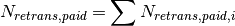
The total carbon accounted for by retranslocation is the sum of the C accounted for by paid-for N uptake (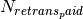) and by free N uptake (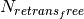).
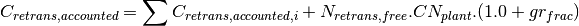
The total available carbon in FUN to spend on fixation and active uptake (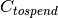, gC m-2) is calculated as the carbon available minus that account for by retranslocation:
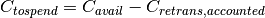
18.5. Carbon expenditure on fixation and active uptake.¶
At each model timestep, the overall cost of N uptake is calculated (see below) in terms of C:N ratios. The available carbon (, g m-2 s-1) is then allocated to two alternative outcomes, payment for N uptake, or conservation for growth. For each carbon conserved for growth, a corresponding quantity of N must be made available. In the case where the plant target C:N ratio is fixed, the partitioning between carbon for growth () and carbon for N uptake () is calculated by solving a system of simultaneous equations. First, the carbon available must equal the carbon spent on N uptake plus that saved for growth.
Second, the nitrogen acquired from expenditure of N (left hand side of term below) must equal the N that is required to match the growth carbon (right hand side of term below).
The solution to these two equated terms can be used to estimate the ideal as follows,
and the other C and N fluxes can be determined following the logic above.
18.6. Modifications to allow variation in C:N ratios¶
The original FUN model as developed by Fisher et al. (2008) and Brzostek et al. (2015) assumes a fixed plant tissue C:N ratio. This means that in the case where N is especially limiting, all excess carbon will be utilized in an attempt to take up more Nitrogen. It has been repeatedly observed, however, that in these circumstances in real life, plants have some flexibility in the C:N stoichiometry of their tissues, and therefore, this assumption may not be realistic. lit review on CN ratios
Thus, in CLM5, we introduce the capacity for tissue C:N ratios to be prognostic, rather than static. Overall N and C availability ( and ) and hence tissue C:N ratios, are both determined by FUN. Allocation to individual tissues is discussed in the allocation chapter
Here we introduce an algorithm which adjusts the C expenditure on uptake to allow varying tissue C:N ratios. Increasing C spent on uptake will directly reduce the C:N ratio, and reducing C spent on uptake (retaining more for tissue growth) will increase it. C spent on uptake is impacted by both the N cost in the environment, and the existing tissue C:N ratio of the plant. The output of this algorithm is , the fraction of the ideal calculated from the FUN equation above (link equation).
18.6.1. Response of C expenditure to Nitrogen uptake cost¶
The environmental cost of Nitrogen () is used to determine .
where and are parameters fitted to give flexible C:N ranges over the operating range of N costs of the model. Calibration of these parameters should be subject to future testing in idealized experimental settings; they are here intended as a placeholder to allow some flexible stoichiometry, in the absence of adequate understanding of this process. Here operates as the above which there is a modification in the C expenditure (to allow higher C:N ratios), and is the scalar which determines how much the C expenditure is modified for a given discrepancy between and the actual cost of uptake.
18.6.2. Response of C expenditure to plant C:N ratios¶
We first calculate a , which is the difference between the target C:N () a model parameter, and the existing C:N ratio () This isn’t strictly how it is worked out. Need to remember why we use c_allometry instead.
- and
We then modify to account for situations where (even if N is expensive) plant C:N ratios have increased too far from the target. For situations where is positive and is <1:
For situations where is negative, we reduce C spent on N uptake and retain more C for growth:
We then restrict the degree to which C expenditure can be reduced ( to prevent unrea;istically high C:N ratios) as